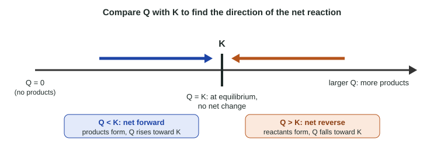

Topic 7.2 found the direction of a reaction by comparing two rates. Rates are hard to measure, though; concentrations are easy. This page builds a single number from the concentrations, the reaction quotient Q, and shows how comparing it with the equilibrium constant K tells you which way a mixture will react.
The equilibrium constant expression
Measure the equilibrium concentrations of H2, I2 and HI in many flasks at the same temperature, each started with different amounts. The concentrations differ from flask to flask. But one combination of them comes out the same every time: [HI]2 / ([H2][I2]). That fixed value is the equilibrium constant, K.
For a general reaction aA + bB ⇌ cC + dD, the rule (sometimes called the law of mass action) is:
Kc = [C]c[D]d / ([A]a[B]b)
- Products on top, reactants on the bottom.
- Each concentration is raised to the power of its coefficient in the balanced equation. Coefficients become exponents, never multipliers.
- Square brackets mean molar concentration (mol/L) at equilibrium. Kc is the constant written with concentrations.
- Pure solids and pure liquids are left out. A solid's or a liquid's "concentration" is set by its density, so it does not change as the reaction runs, however much of it is present. Water that is the solvent is left out for the same reason. Gases and dissolved (aq) species go in.
Examples: for N2O4(g) ⇌ 2 NO2(g), Kc = [NO2]2 / [N2O4]. For CaCO3(s) ⇌ CaO(s) + CO2(g), Kc = [CO2]: both solids drop out.
On the exam K is written without units.
Kp: the same idea with pressures
For gases it is often easier to measure partial pressures (topic 3.4) than concentrations. Kp is written exactly like Kc, with partial pressures in atm in place of concentrations, and no square brackets:
N2(g) + 3 H2(g) ⇌ 2 NH3(g) → Kp = PNH₃2 / (PN₂ × PH₂3)
Readers often see brackets used in a Kp expression; brackets mean concentration, so they cost the point. Kc and Kp for the same reaction usually have different values, so always compare like with like.
The reaction quotient Q
The reaction quotient, Q, has exactly the same expression as K, but you plug in the concentrations (or pressures) present right now, whether or not the system is at equilibrium. Qc uses concentrations and Qp uses partial pressures. As a reaction runs, Q changes; when the system reaches equilibrium, Q has become equal to K. K is the one value of Q that a system settles at, for a given temperature.
Worked example. For 2 SO2(g) + O2(g) ⇌ 2 SO3(g), Kc = 2.80 × 102. A flask holds [SO2] = 0.100 M, [O2] = 0.0500 M, [SO3] = 0.200 M. Which way will it react?
1. Write Q: Qc = [SO3]2 / ([SO2]2[O2]).
2. Substitute: Qc = (0.200)2 / ((0.100)2 × 0.0500) = 0.0400 / 0.000500 = 80.0.
3. Compare: 80.0 < 280, so Q < K. The net reaction goes forward: SO3 forms and Q rises until it equals 280.
Check: forgetting the squares gives 40.0, and turning the fraction upside down gives 0.0125. Both lead to wrong comparisons.
Comparing Q with K: which way?

| Comparison | What it means | Net reaction |
|---|---|---|
| Q < K | too little product, compared with equilibrium | forward: products form, Q rises |
| Q > K | too much product, compared with equilibrium | reverse: reactants form, Q falls |
| Q = K | the equilibrium ratio | none: at equilibrium |
This links to topic 7.2. When Q < K, the forward rate is greater than the reverse rate; when Q > K, the reverse rate is greater. The comparison of Q with K is just a way to read off the rate comparison from concentrations you can measure.
Two special cases: a mixture with no products at all has Q = 0 and must react forward. A mixture with products but a missing reactant would have Q infinitely large and must react in reverse.
Working backward: the equilibrium amount
Because Q = K at equilibrium, you can also find what one concentration would have to be for a mixture to be at equilibrium.
Worked example. For 2 NO(g) + Cl2(g) ⇌ 2 NOCl(g), Kc = 4.6 × 104. A mixture holds [NO] = 0.020 M and [Cl2] = 0.010 M. What [NOCl] would make it an equilibrium mixture?
1. Set Q = K: [NOCl]2 / ((0.020)2 × 0.010) = 4.6 × 104.
2. Rearrange: [NOCl]2 = 4.6 × 104 × (0.020)2 × 0.010 = 0.184.
3. Square root: [NOCl] = 0.43 M (two significant figures, from K and the data).